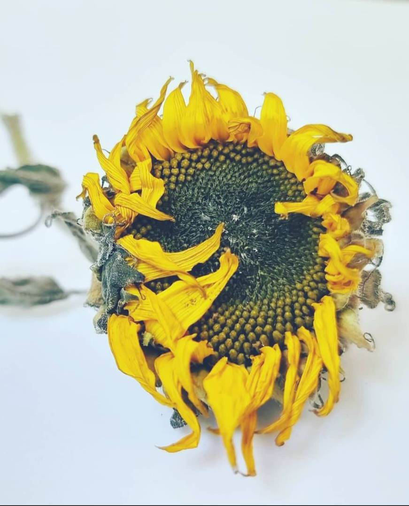

Fading Radiance
2021
Photography
A wilting sunflower gracefully lying on a white backdrop. Despite its fading state, the artwork conveys a profound message of enduring beauty in imperfection. The wilting petals and subdued colors evoke a sense of acceptance and appreciation for the transient nature of life, reminding viewers that even in decline, there is a quiet elegance that remains.
$160.00 AUD